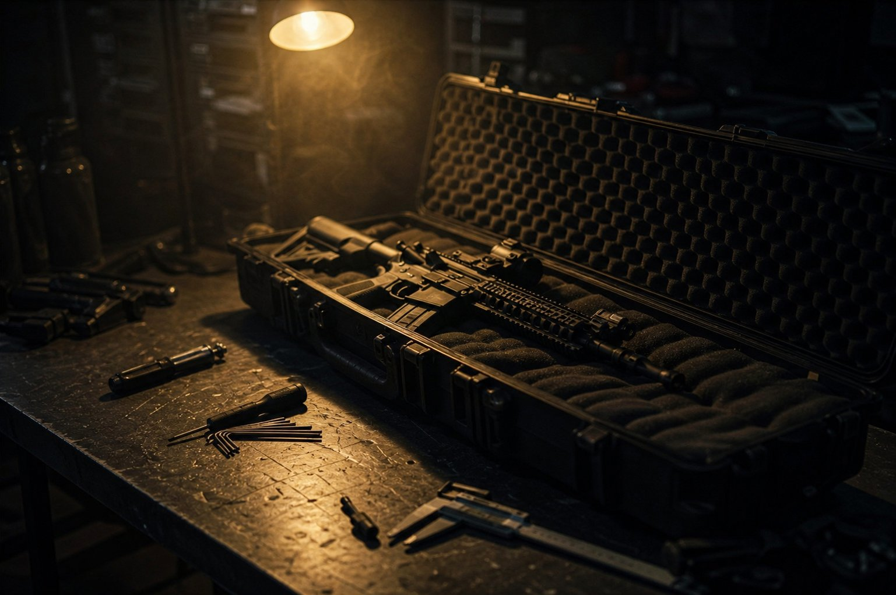

1. Vue d'ensemble : le premier set saisonnier
2. Les quatre kits saisonniers — les noms et les effets officiels
Ce sont des season kits : des pièces expérimentales, concept propre à la Saison 7. L'éditeur les présente dans ses notes de mise à jour du 16 septembre 2026, avec quatre noms et quatre effets précis. Ce sont ces noms que le joueur voit dans le jeu — les guides communautaires qui les nomment autrement induisent en erreur.
| Nom officiel | Arme | Effet officiel |
|---|---|---|
| PCC-9 fully-automatic kit | PCC-9 | Apporte un mode de tir fully-automatic au PCC-9. |
| M110 binary trigger | M110 | Tire deux projectiles par pression de détente, ce qui donne au M110 une puissance de dégâts immédiatement menaçante. |
| MPX Vulcan barrel | MPX | Offre au MPX des options de munitions à chair (branche de munitions). |
| FAL burst kit | FAL | fait passer le pouvoir de feu du FAL de « mid-low » à « high », au prix d'un taux de feu légèrement inférieur. |
Source : notes de mise à jour de la Saison 7, MoreFun Studios (16 septembre 2026). Traduction française des libellés anglais.
L'erreur d'achat la plus coûteuse de la saison
Les notes de l'éditeur sont explicites : « Ces kits seront retirés à la fin de la saison, et une nouvelle série de kits pour d'autres armes sera introduite la saison suivante. »
- Un kit saisonnier acheté en décembre ne vaut rien en janvier. Son prix monte dans les dernières semaines — puis tombe à zéro d'un coup.
- Le stock non équipé est perdu. Seule la pièce déjà montée sur l'arme suit l'arme.
- La logique d'achat est donc inversée : on achète tôt pour l use intensive pendant la saison, et on arrête d'en acheter dès que la fin de saison s'approche.
Et pour le FAL Burst Kit, une nuance de vocabulaire
La fiche du FAL est le seul kit dont l'effet est une conversion de mode plutôt qu'un simple ajout. Le libellé officiel parle de « power » — passer de « mid-low » à « high » — ce qui recouvre à la fois le profil de dégâts et la docilité du tir. Et le prix à payer est explicite : un taux de feu légèrement inférieur. C'est précisément ce qui en fait un kit « low-RPM » : le FAL Burst Kit ne vous rend pas plus rapide, il rend le FAL plus violent par projectile.
Les attachements saisonniers sont liés à la durée de la saison. MoreFun ne garantit pas leur disponibilité identique au-delà de la S7 : acheter tôt = garantir vos builds.
| Attachement | Arme concernée | Effet | Tier de réveil |
|---|---|---|---|
| PCC-9 Fully-Automatic Kit | PCC9 | Convertit en full-auto ; boost close-range quelle que soit la mun | D → A |
| M110 Binary Trigger | M110 | 2 balles par trigger pull — réactivité en peek | B → A |
| FAL Burst Kit | FAL | Stabilise le recul ; FAL meta low-RPM | C → A |
| MPX Vulcan Barrel | MPX | Dégâts jambes/chair absurdes ; perce les armures | C → B/A |
3. PCC-9 Fully-Automatic Kit — le PCC9 ressuscité
- Avant : full-auto punitif, contrôle médiocre, soldats ignorés.
- Après : near-zero recoil peeks, TTK SMG-class sous 15 m, relique de la méta CQB.
- Ordre d'achat : cet attachment est le meilleur rapport coût/efficacité du set.
- Synergie : muns 9mm Dum-Dum contre les jambes non blindées = déshabillage de lobbies entiers.
Build type PCC9
PCC9 + Fully-Automatic Kit + mun Dum-Dum + optique 1x + poignée angled. Coût total ~150–200 000 K — le meilleur ticket d'entrée Lockdown S7.
4. M110 Binary Trigger — la peur redefined
- Effet : deux projectiles par pression. En peek, vous livrez 2 balles instantanément au lieu d'une.
- Le build : overwatch 50–120 m. Montez une 4–6x, gardez le laser off pour les peeks disciplinés.
- Munitions : Ultra-Flesh / US+ AP selon la cible — jamais de T2.
- Erreur à éviter : ne spammez pas le deux-shot hors peek, c'est un trigger binaire de précision.
5. FAL Burst Kit — le retour du fusil de bataille
- Avant : FAL fort mais ingouvernable au-delà de 2 coups.
- Après : stable low-RPM, headshot machine, l'âme du T6 de Forbidden.
- Munitions : Ultra-Flesh ou AP selon le lobby — le FAL percute avec n'importe quelle BP-class.
- Rôle : l'arme des mains calmes. Chaque balle vaut cher : visez, respirez, cliquez.
L'erreur de munition sur le Vulcan Barrel
Le MPX Vulcan Barrel augmente les dégâts infligés aux cibles non protégées et réduit les dégâts infligés aux cibles armées. C'est une pièce de chair, pas de pénétration.
La conséquence est directe et coûteuse : ne gaspillez pas de 7N39 sur ce MPX. Le 7N39 est une munition à très forte pénétration ; sur une pièce qui réduit volontairement la pénétration, il perd l'essentiel de son intérêt. Les munitions à utiliser sont les Dum-Dum : elles infligent des dégâts de chair très élevés de près, et la pénalité de l'armure ne les concernait pas au départ.
Les ordres de grandeur rapportés par les joueurs : environ 90+ de dégâts de chair au contact, et encore 60+ vers 80–100 mètres. Le canon du MPX garde une portée correcte, mais sa vraie zone utile reste courte.
Source : retours de joueurs et de créateurs de contenu sur YouTube et Reddit. Donnée communautaire, non publiée par l'éditeur.
6. MPX Vulcan Barrel — le broyeur de jambes
- Effet : dégâts chair/jambe absurdes. Contre T5/T6 chest, les jambes non blindées deviennent votre cible stratégique.
- L'astuce « leg meta » : visez les genoux/cuisses — l'armure ne protège pas la mobilité.
- Usage : armory, TV Station, Infected Zone en boss rush.
- Limite : portée 20 m max. Au-delà, le Vector .45 fait mieux.
7. Compatibilité officielle : ce que le wiki confirme
Les quatre sets de la Saison 7 sont une tentative de fixer l'équipement à un rôle précis.Le wiki officiel permet de trancher une question que les guides communautaires laisse souvent floue : ces pièces existent-elles et se montent-elles vraiment sur ces armes ?
| Arme | Pièces dédiées documentées | Nombre |
|---|---|---|
| PCC-9 | Le wiki ne recense aucune pièce dédiée au PCC-9 : vérifiez l'armurerie avant d'acheter, un set « PCC-9 Fully-Automatic Kit » peut ne pas exister. | 0 |
| M110 | M110 Extended Barrel | 1 |
| FAL | FAL Perforated Front Hand Guard, FAL Sight Mount Receiver Cover, FAL Special Stock, FAL Triangle Stock | 4 |
| MPX | MPX Standard Barrel, MPX Extended Barrel, MPX 10.5 Modular Locking Handguard, MPX 14 Modular Locking Handguard | 4 |
Source : wiki officiel ABI, section « Weapon Mods ». Cette vérification ne dit pas si une pièce est « bonne » — elle dit si elle est documentée et compatible.
Pourquoi cette vérification compte
Le marché de l'ABI est saturated de recopies de builds saisonniers, souvent antérieurs de plusieurs patchs. Une pièce qui n'existe pas dans le catalogue officiel coûte de l'argent, occupe un slot de modification et dégrade l'arme au lieu de l'améliorer. Vérifiez la compatibilité avant d'acheter, pas après. Et pour le PCC-9 en particulier : l'absence de pièce dédiée documentée est un signal fort — soit le set n'existe pas sous ce nom, soit il n'a pas encore été référencé par le wiki.
8. Ordre d'achat recommandé
- PCC-9 Fully-Automatic Kit — le ROI le plus immédiat (~50 000 K estimés).
- FAL Burst Kit — si vous jouez Lockdown/Forbidden mid-range.
- M110 Binary Trigger — si vous jouez overwatch/DMR.
- MPX Vulcan Barrel — seulement si vous jouez CQB intérieur.
Piège saisonnier
« Si un attachment saisonnier retire la faiblesse principale d'une arme déjà puissante, le meta se resserre au lieu de s'élargir » — l'analyse d'IDC Games est exacte. Watch les hotfixes : une nerf d'ajustement peut dévaluer votre achat en une nuit.
Pour les collectionneurs
Les attachements S7 seront probablement réintroduits plus tard à prix premium. Achetez au lancement, recherchez les rolls quasi parfaits, rangez-les bien.